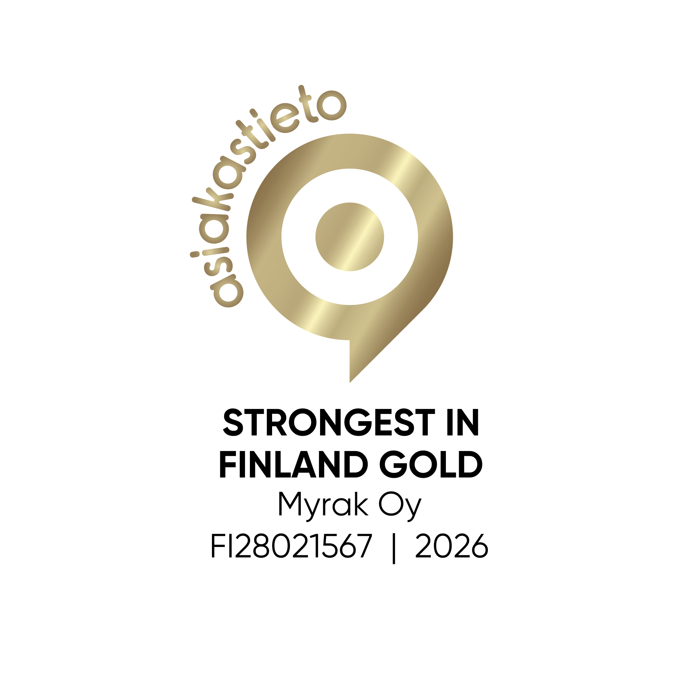
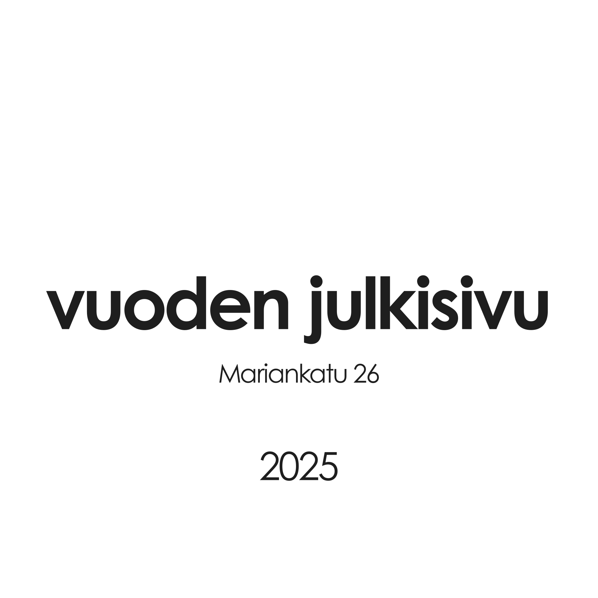
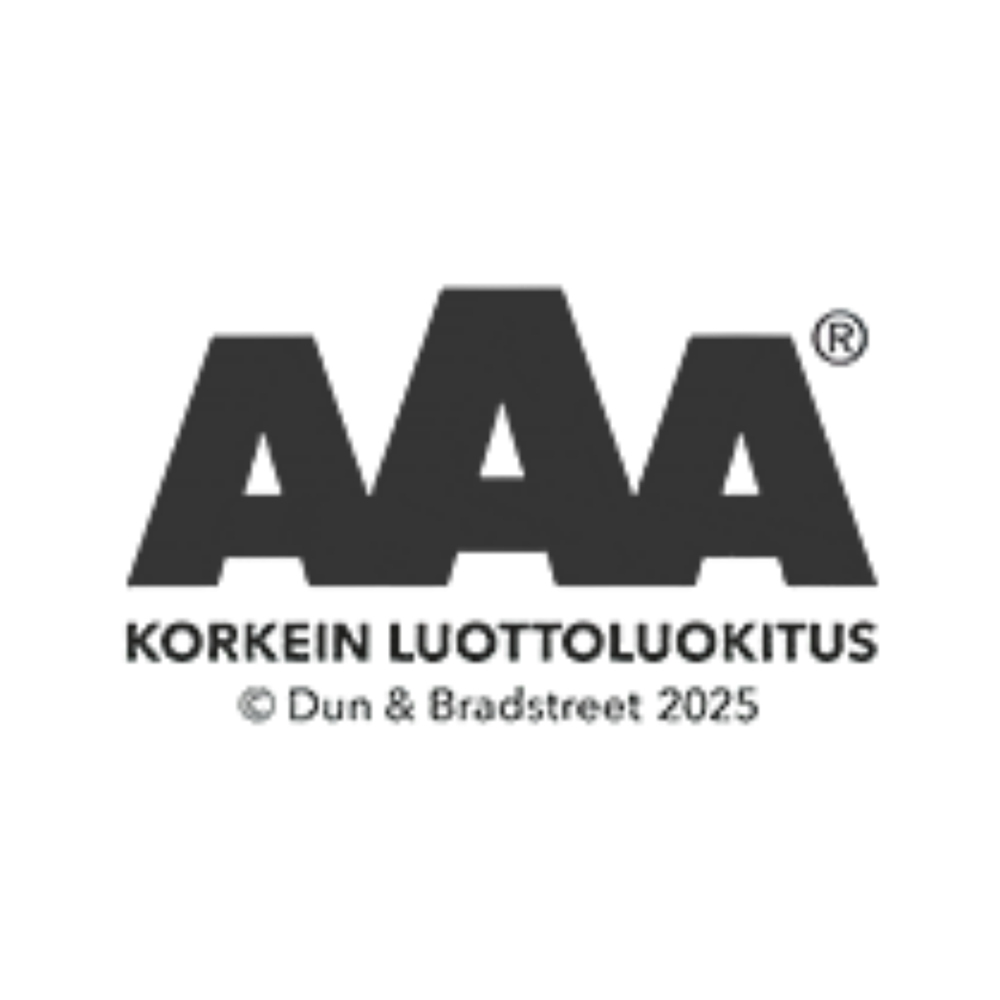
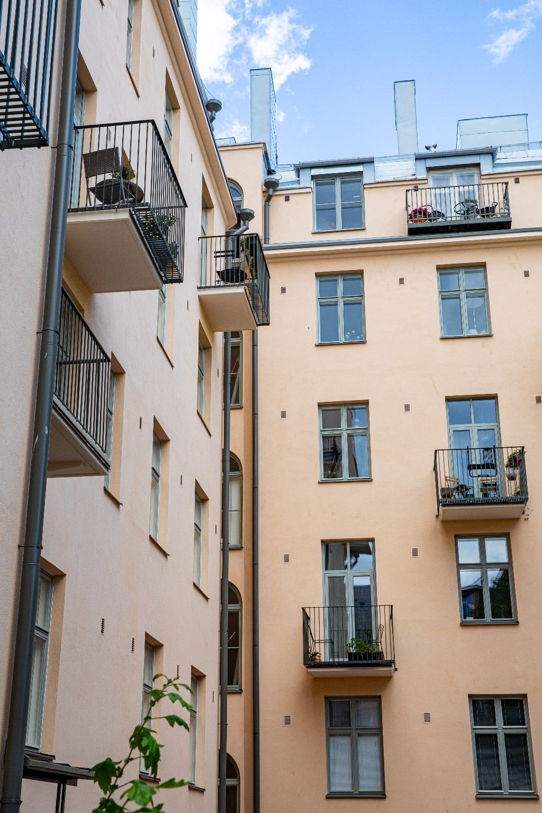
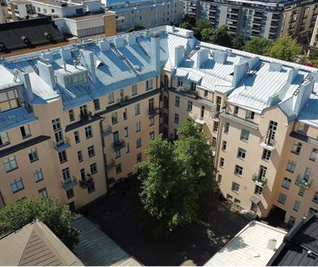
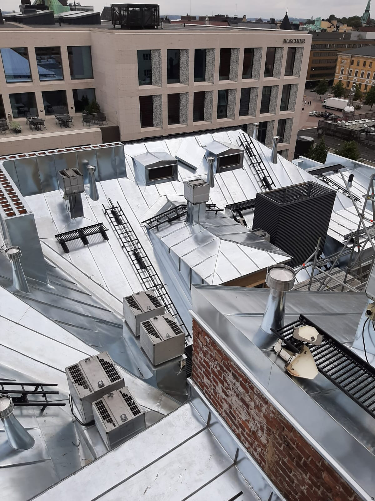
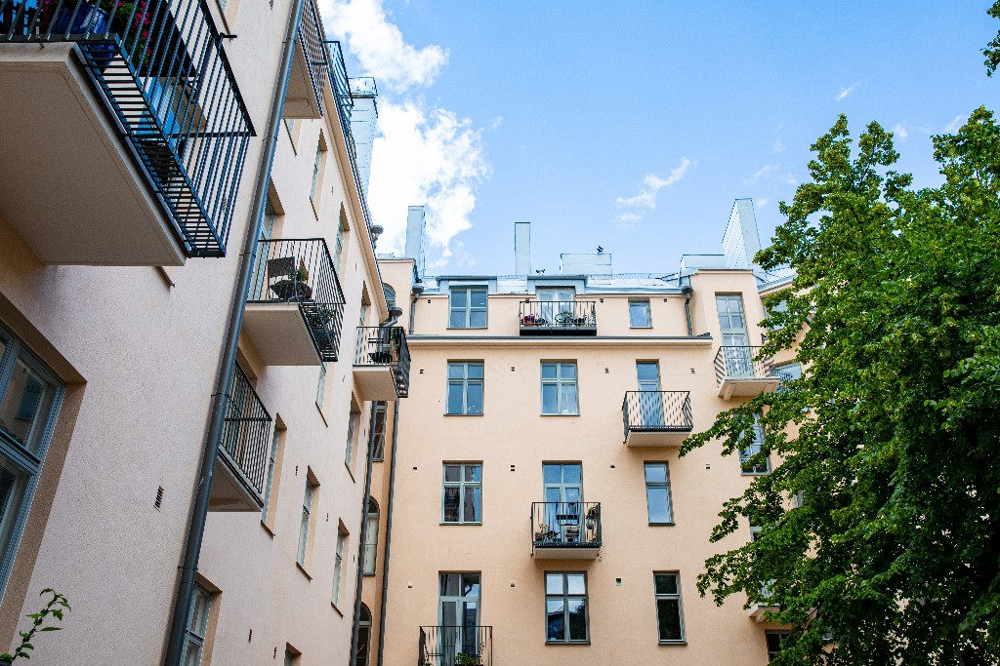
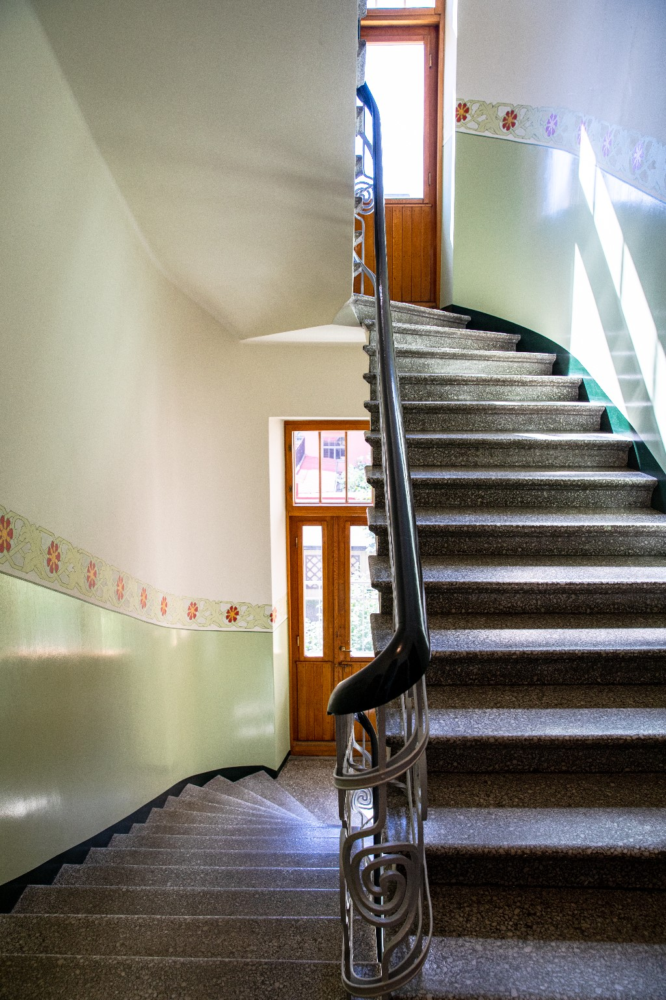
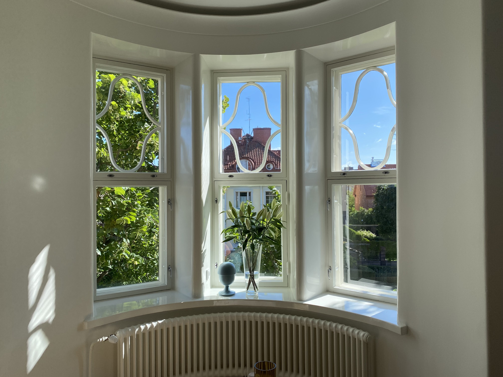
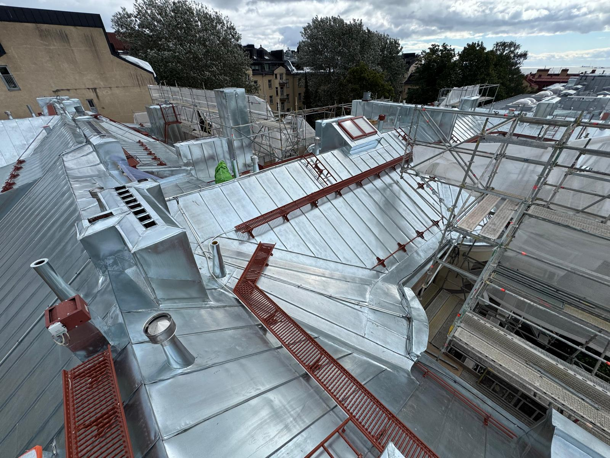

Tästä meidät tunnistaa




Luotettavaa korjausrakentamista pääkaupunkiseudulla jo 10 vuoden ajan
Tästä meidät tunnistaa



Myrak Oy on suomalainen perheyritys, joka on erikoistunut vanhojen arvokiinteistöjen vaativiin julkisivu- ja vesikattokorjauksiin. Pääasiallinen toimialue on pääkaupunkiseutu.
Asiakkaitamme ovat taloyhtiöt, säätiöt, seurakunnat ja kiinteistösijoitusyhtiöt. Teemme jokaisen projektin alusta loppuun itse — ilman aliurakoitsijoita.
Tutustu palveluihin

Kattavat korjausrakentamisen palvelut yhdeltä luukulta

Rappausten uusiminen, paikkaustyöt, muurattujen julkisivujen korjaukset ja parvekekunnostukset.
Lue lisää →
Pelti- ja tiilikattojen uusimiset, paksupinnoitukset, piipunhatut ja sadevesijärjestelmät.
Lue lisää →
Parveke- ja terassikaiteiden kunnostus, aidat, portit ja kattoturvatuotteet.
Lue lisää →
Kipsi-, betoni- ja valumetallikoristeet julkisivu- ja sisätilakorjauksiin.
Lue lisää →
Porraskäytävien ja kellaritilojen kunnostukset minimoiden häiriöt asukkaille.
Lue lisää →
Ikkunoiden ja ovien entisöinti sekä uusiminen ammattitaidolla.
Olemme toteuttaneet satoja onnistuneita hankkeita ympäri pääkaupunkiseutua

Vesipellin uusimistyöt

Julkisivujen kunnostus- ja pintakäsittelytyöt

Julkisivun täysremontti — rappaustyöt, kipsikoristeet, ikkunoiden kunnostus
Myrak Oy
Pietarinkatu 11 A90
00140 Helsinki
Y-tunnus: 2802156-7
Pääkonttori Helsingin Eirassa ja kaksi verstasta Vantaalla

00140 Helsinki — toimisto ja projektinjohto

Vanhojen ikkunoiden kunnostus ja entisöinti.

Metallityöt, koristeet ja puuosien valmistus.